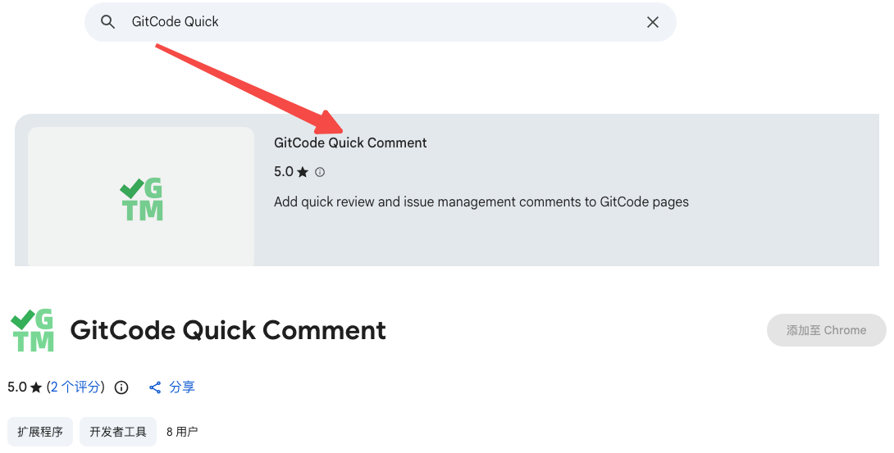

在线安装
适合可以访问应用商店的环境，安装后自动更新。
-
1
打开扩展详情页
使用上面的商店链接，或在商店中搜索「GitCode Quick Comment」。

搜索扩展并进入详情页。 -
2
添加扩展
Chrome 点击「添加至 Chrome」，Edge 点击「获取」，在弹窗中确认。
-
3
固定到工具栏
安装完成后建议把插件固定到工具栏。点击图标可以打开设置面板，自定义按钮显示、排序和 PR 命令提交方式。
提示：安装或更新扩展后，已经打开的 GitCode 页面需要刷新一次。商店版本会自动更新，无需手动替换文件。